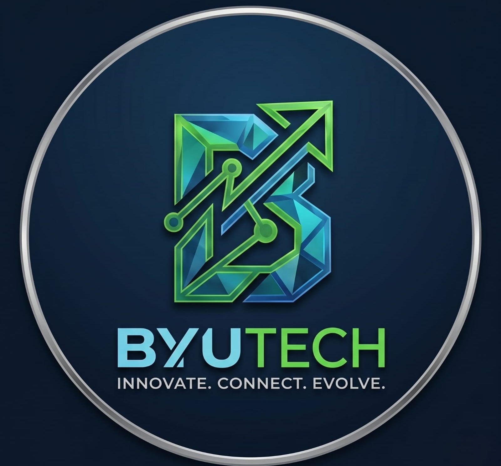

Automatizamos su contabilidad fiscal, optimizamos su soporte técnico TI y blindamos operaciones críticas de seguridad privada. Soluciones integrales al 100% de efectividad.
+15,000
Eventos y XML Procesados
0
Brechas de Seguridad
< 3 min
Respuesta Help Desk
24/7/365
Monitoreo Activo
Efectividad del 100% // Cero Errores Humanos // Alta Disponibilidad
Cruce inmediato entre archivos XML de Hacienda y reportes bancarios en PDF. Asocia depósitos complejos y SINPE Móvil de forma autónoma.
Ingeniería de mesa de servicio nivel 2. Resolución automatizada de fallas de red, optimización CCNA y diagnóstico preventivo de servidores.
Protección de centrales de monitoreo, cifrado de bitácoras de vigilancia y contención ante intrusiones o ataques dirigidos DDoS.
Protección perimetral proactiva, concientización de personal y resiliencia activa contra Ransomware.
Hasta 15 colaboradores corporativos
Más de 15 colaboradores corporativos
Sistemas avanzados diseñados para el mercado corporativo e industrial
Filtro, encriptación y anonimización de datos sensibles a nivel local. Protege secretos comerciales, credenciales de acceso táctico y bitácoras de seguridad sin comprometer la privacidad ni violar regulaciones locales.
Monitoreo preventivo y mesa de servicio mediante scripts de Python y Bash. Nuestra infraestructura predice saturación de servidores de videovigilancia, caídas de red y fallas en bases de datos antes de que detengan la operación.
Nuestra tecnología operando en tiempo real en múltiples sectores
Implementación de nuestro motor de automatización para procesamiento de planillas, facturación electrónica de materiales y cruce bancario automatizado. Eliminó por completo los retrasos semanales en cierres fiscales de proyectos comerciales a gran escala.
Despliegue de bots integrados de respuesta inmediata y enrutamiento inteligente de datos corporativos. Maneja consultas de clientes internos las 24 horas del día, procesando archivos de estado y reportes de forma autónoma.
Implementación de sistemas de encriptación simétrica para bitácoras digitales, protección táctica de flujos de video IP de cámaras de seguridad y endurecimiento de firewalls contra ataques de denegación de servicio (DDoS).
Despliegue de un motor autónomo de atención y soporte técnico nivel 1 y 2. Diagnostica automáticamente problemas de conectividad local, gestiona colas de tickets de operarios y ejecuta tareas de mantenimiento de red programadas en segundo plano.
Sectores empresariales optimizados y resguardados por BYUTech
Seleccione un sector empresarial para desplegar la bitácora de soluciones y métricas de impacto optimizadas por BYUTech.
Ingrese las credenciales operativas de su negocio para agendar una auditoría o demo automatizada.